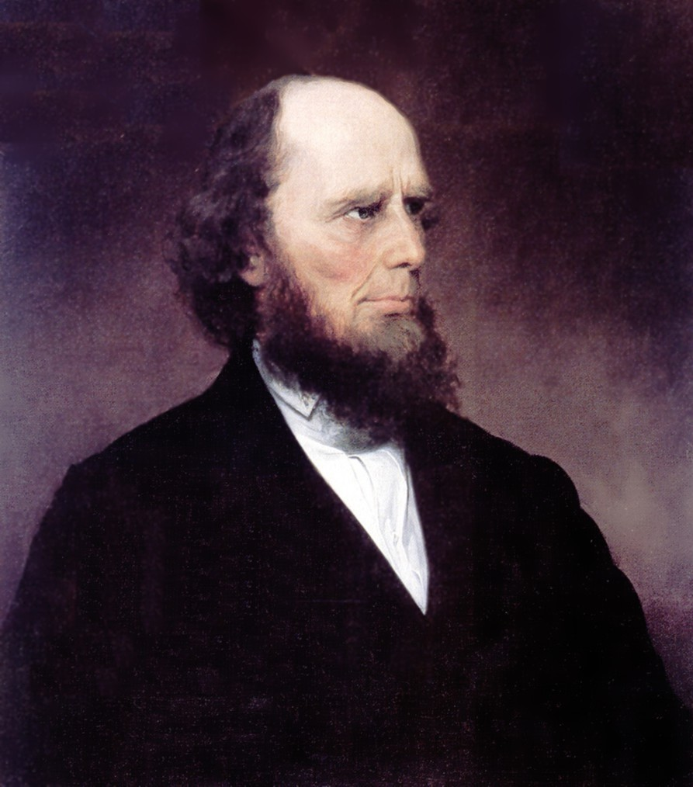
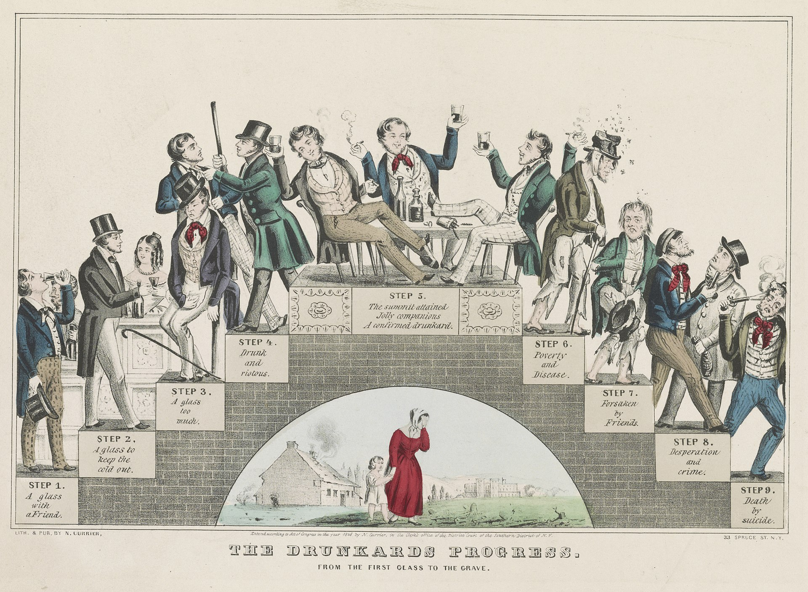
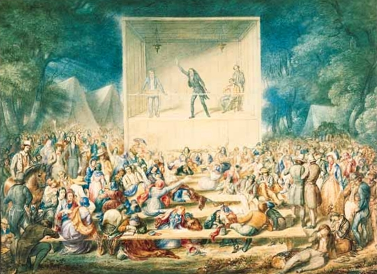

Directions: Work through the five stations in order. Each station holds one record of the years 1801 to 1848, quoted from the edition named in its Source line, with cuts marked by ellipses, or labeled as a teaching summary where the record is presented in that form. As you work, keep the ledger in Part 2: for each record, state what its author says must be fixed first, and the remedy proposed, with the person or body asked to carry it. At the end, judge why revival produced reformers, and defend the judgment from the documents.
Source: Charles Grandison Finney, Lectures on Revivals of Religion, Lecture I, "What a Revival of Religion Is" (first edition, Leavitt, Lord & Co., New York, 1835), in the transcription of Lecture I read for this lesson. The lectures were first delivered in New York in 1834 and printed in 1835. Spelling follows the edition. Cuts are marked by ellipses.

"Religion is the work of man. It is something for man to do. It consists in obeying God. It is man's duty."
"A revival is not a miracle. ... I said that a revival is the result of the right use of the appropriate means. ... A revival is as naturally a result of the use of the appropriate means as a crop is of the use of its appropriate means."
State what Finney says religion is, in his own sequence of short sentences, and then state what a revival is not and what it is the result of, naming the comparison he uses to make the point. Then enter in the ledger what this record says must be fixed first, and the remedy and its carrier.
Source: Teaching summary written for this lesson from the public record, labeled as a summary. No sentence in the summary is presented as a period quotation. The print below it is a period document and is captioned as one.
In Boston in 1826, ministers and laymen founded the American Temperance Society, the first national organization of the movement against drink. Its instrument was a signed pledge. A member promised, at first, to abstain from ardent spirits, the distilled liquors such as whiskey and rum, and the early pledge did not yet reach beer, wine, or cider. Local societies spread town by town, printed tracts, sent out lecturers, and read the names of signers aloud, so that the promise carried a public standard with it. Through the 1830s many societies replaced the first pledge with a stricter one, total abstinence from every intoxicating drink, and the movement counted its members in the millions of signatures claimed by its reports. By the 1840s its leaders were pressing state legislatures to prohibit the sale of alcohol by law, carrying the pledge's work from the conscience to the statute book.

State what the first pledge covered and what it did not yet cover, how the pledge changed through the 1830s, and where the movement carried its work in the 1840s. Then read the print: name the first step and the last step as the print labels them, and state what argument the nine steps make as a sequence. Then enter the station in the ledger.
Source: Horace Mann, Twelfth Annual Report of the Secretary of the Massachusetts Board of Education, 1848, as printed in Life and Works of Horace Mann, vol. 4 (Boston: Lee and Shepard, 1891), pp. 246 to 252, the section on intellectual education as a means of removing poverty. Mann contrasts a European theory of fixed classes with a Massachusetts theory, and the passages below follow in his order. Spelling follows the edition. Cuts are marked by ellipses.
"According to the Massachusetts theory, all are to have an equal chance for earning, and equal security in the enjoyment of what they earn. The latter tends to equality of condition; the former, to the grossest inequalities."
"But, if education be equably diffused, it will draw property after it by the strongest of all attractions; for such a thing never did happen, and never can happen, as that an intelligent and practical body of men should be permanently poor."
"It does better than to disarm the poor of their hostility towards the rich: it prevents being poor."
State the Massachusetts theory as Mann gives it, and what it tends toward. Then state his condition and his promise: what must be spread, and what he says will follow it, in his own reasoning. Last, state what he says education does better than disarming hostility. Then enter in the ledger what this record says must be fixed first, and the remedy and its carrier.
Source: Dorothea Dix, Memorial to the Legislature of Massachusetts, January 1843, in the transcription carried by the Bill of Rights Institute. Dix had inspected the jails and almshouses of Massachusetts and presented her findings as a written memorial, read to the legislature on her behalf. The words she uses for the people she found, including terms no longer used, are her own and stand as she wrote them. Spelling follows the transcription. Cuts are marked by ellipses.
"I come to present the strong claims of suffering humanity. I come to place before the Legislature of Massachusetts the condition of the miserable, the desolate, the outcast. I come as the advocate of helpless, forgotten, insane and idiotic men and women; of beings, sunk to a condition from which the most unconcerned would start with real horror; of beings wretched in our Prisons, and more wretched in our almshouses."
"I proceed, Gentlemen, briefly to call your attention to the present state of Insane Persons confined within this Commonwealth, in cages, closets, cellars, stalls, pens! Chained, naked, beaten with rods, and lashed into obedience!"
From her notebook extracts, printed in the Memorial: "Lincoln. A woman in a cage." "Medford. One idiotic subject chained, and one in a close stall for 17 years." "Granville. One often closely confined; now losing the use of his limbs from want of exercise."
"It is the Commonwealth, not its integral parts, that is accountable for most of the abuses which have lately, and do still exist. I repeat it, it is defective legislation which perpetuates and multiplies these abuses."
State for whom Dix says she comes as advocate, in her own list, and the places and conditions she names for the insane of the Commonwealth. Then state the cause she assigns at the end: what perpetuates the abuses, and what kind of action that cause points to. Then enter in the ledger what this record says must be fixed first, and the remedy and its carrier.
Source: Teaching summary written for this lesson from the public record, labeled as a summary. No sentence in this station is presented as a period quotation. The picture below the summary is a period drawing and is captioned as one.
The revival's first instrument was a meeting held outdoors because no building could hold it. At Red River, in Logan County, Kentucky, in June 1800, Presbyterian and Methodist ministers held a sacramental meeting that ran for days, and at Cane Ridge, in Bourbon County, Kentucky, in August 1801, a meeting at Barton Stone's church drew thousands of people, by the usual estimates between ten and twenty thousand, into the woods for nearly a week of preaching. Families camped in tents and wagons around a clearing. Preachers relieved one another at a stand from morning into the night, and hearers under conviction of sin wept, cried out, and in some cases fell to the ground, while neighbors prayed with them where they lay. The Methodist church took the camp meeting as its own instrument and its circuit riders carried the form across the frontier, so that for a generation of Americans in scattered settlements, religion arrived not as a settled parish but as an event that gathered a crowd, pressed a decision, and then organized the decided into a congregation.

State where and when the two meetings named in this record were held, how long such a meeting ran, and three things a person attending would have seen or heard. Then state what the Methodist church did with the form, and what the summary says religion arrived as, in place of a settled parish. Then enter in the ledger what this record shows being fixed first, and by whom.
| Station | What must be fixed first | The remedy, and who is asked to carry it |
|---|---|---|
| 1. Finney | ||
| 2. The pledge | ||
| 3. Mann | ||
| 4. Dix | ||
| 5. The camp meeting |
Why did revival produce reformers, and what did they set out to fix first? Answer in a developed paragraph. Use at least three stations, show the chain from a teaching about the human will to an organized remedy, and answer in one or two sentences the strongest claim for a different explanation, that the reforms were only a reaction to the factories and cities of the market revolution.
Station 1. Finney's sequence: religion is the work of man; it is something for man to do; it consists in obeying God; it is man's duty. A revival is not a miracle, something dropped from heaven on a waiting church. It is the result of the right use of the appropriate means, and the comparison is agriculture: a revival follows its means as naturally as a crop follows sowing. What must be fixed first is therefore the sinner's own will, and the remedy is work, the means rightly used, carried by preachers and churches who stop waiting and start sowing. This station is the file's engine: every remedy in the stations after it runs on this teaching. (Blueprint 11)
Station 2. The summary's record: the first pledge of the American Temperance Society, founded at Boston in 1826, covered ardent spirits, distilled liquor, and did not yet reach beer, wine, or cider. Through the 1830s many societies replaced it with total abstinence from every intoxicating drink, and by the 1840s the movement pressed state legislatures to prohibit the sale of alcohol by law. The print argues by sequence: step 1 is labeled "A glass with a Friend" and step 9 is labeled "Death by suicide," at the foot of the arch, with poverty, disease, and being forsaken by friends drawn as the middle steps and the drinker's wife and child standing under the arch, so the first glass is made to contain the grave. What must be fixed first is the drinking itself, at the level of the individual signature, and the carriers widen in order: the signer, the local society, and at last the legislature. (Blueprint 12)
Station 3. The Massachusetts theory: all are to have an equal chance for earning, and equal security in the enjoyment of what they earn, and it tends to equality of condition, where the European theory tends to the grossest inequalities. The condition is that education be equably diffused, spread evenly through the people, and the promise is that it will draw property after it by the strongest of all attractions, because an intelligent and practical body of men has never been, and never can be, permanently poor. Better than disarming the poor of their hostility toward the rich, education prevents being poor. What must be fixed first is ignorant and unequal schooling; the remedy is the tax supported common school, argued for in the annual reports from 1837 and carried by the Commonwealth and its districts. (Blueprint 12)
Station 4. Dix comes as the advocate of helpless, forgotten, insane and idiotic men and women, of beings wretched in the prisons and more wretched in the almshouses, and she places before the legislature the condition of the miserable, the desolate, the outcast. The insane of the Commonwealth are confined in cages, closets, cellars, stalls, and pens, chained, naked, beaten with rods, and lashed into obedience, and her notebook gives the record town by town: a woman in a cage at Lincoln, a subject chained and one held in a close stall for 17 years at Medford, a man at Granville losing the use of his limbs for want of exercise. The cause she assigns is defective legislation, for which the Commonwealth, not its parts, is accountable, and that cause points to legislation as the remedy: what law has built badly, law must rebuild, in asylums fit for care. What must be fixed first is the confinement itself, and the carrier asked to act is the legislature she is addressing. (Blueprint 12)
Station 5. The summary's record: Red River, Logan County, Kentucky, June 1800, and Cane Ridge, Bourbon County, Kentucky, August 1801, the second drawing thousands, by the usual estimates between ten and twenty thousand, for nearly a week. A meeting ran for days. An attending person would have seen families camped in tents and wagons around a clearing, preachers relieving one another at a stand from morning into the night, and hearers weeping, crying out, and falling to the ground under conviction while neighbors prayed with them. The Methodist church took the camp meeting as its own instrument and its circuit riders carried the form across the frontier. Religion arrived as an event that gathered a crowd, pressed a decision, and organized the decided into a congregation. What is fixed first here is the absence of religion itself in scattered settlements, and the carriers are the preachers and the churches that sent them. (Blueprint 11)
The verdict. Full credit requires a judgment, three stations used accurately, the chain from the will to the remedy shown, and the rival explanation answered. The chain: Finney teaches that religion is man's work and a revival the result of means rightly used (Station 1), so a converted will is an instrument that expects employment; the camp meeting shows the instrument gathering and deciding a crowd (Station 5); the pledge turns the decided will on the first evil within reach, drink, and then widens its carrier from signer to society to legislature (Station 2); Mann turns the same confidence toward ignorance, with the state as carrier (Station 3); and Dix turns it toward the people with no will the law respected, and names defective legislation as the cause and law as the remedy (Station 4). The rival claim, that reform was only a reaction to factories and cities, explains the anxieties of the canal towns but not the sequence in the documents: the remedies follow the revival's own calendar and borrow its own tools, the meeting, the pledge, the petition, and the society, and their authors state a theology of the will, not a theory of the factory, as their reason for acting.